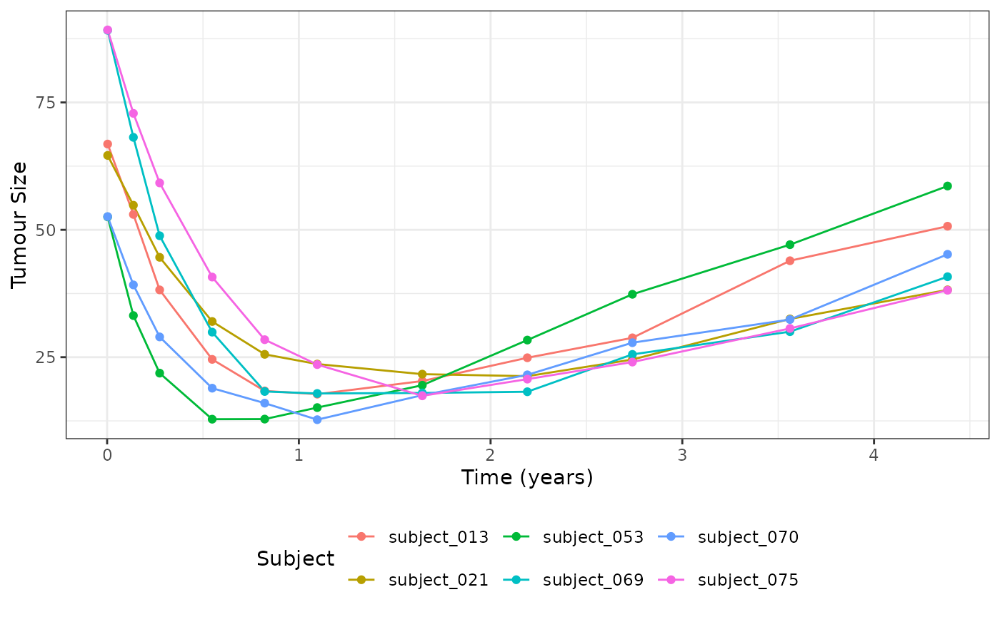

Introduction
This vignette shows a complete example for how to fit a custom longitudinal model. Note that full details for the various different interfaces can be found in the “Extending jmpost” vignette. This example implements the Wang, Sung et al. 2009 mixed exponential decay and linear growth model along with an exponential survival model. In particular the following model will be implemented:
Longitudinal Model:
Where: * is the subject index * is the observed tumour size measurement for subject at time * is the expected tumour size measurement for subject at time * is the subject baseline tumour size measurement * is the subject kinetics shrinkage parameter * is the subject kinetics tumour growth parameter * is the population mean for parameter * is the population standard deviation for parameter .
Survival Model:
Where:
- is the baseline hazard rate. This is because for this example we are using an exponential survival model e.g.
- is the event time
- is a link function that maps the subjects tumour growth parameters to a contribution to the log-hazard function
- is the subjects covariate design matrix
- is the corresponding coefficients vector to scale the design matrix covariates contribution to the log-hazard function
For this example we will just consider the derivative of the growth function as the link function, e.g.
To keep the example simple, a number of features that have been
implemented in the package’s
internal models will be skipped; you may wish to consider adding these
if implementing this model in a real project. In particular the
following have been omitted from this example:
- Handling for censored observations (e.g. observations that are below the limit of quantification)
- Separate populations per study / arm
- Non-centred parameterisation for the hierarchical parameters (this parameterisation leads to better performance if you have small numbers of observations per each subject).
- Handling negative observation time (e.g. observations that are taken before the start of the study)
For reference the following libraries will be used during this example:
library(jmpost)
#> Registered S3 methods overwritten by 'ggpp':
#> method from
#> heightDetails.titleGrob ggplot2
#> widthDetails.titleGrob ggplot2
#> CmdStan path set to: /root/.cmdstan/cmdstan-2.36.0
library(ggplot2)
library(dplyr)
#>
#> Attaching package: 'dplyr'
#> The following objects are masked from 'package:stats':
#>
#> filter, lag
#> The following objects are masked from 'package:base':
#>
#> intersect, setdiff, setequal, union
library(loo)
#> This is loo version 2.8.0
#> - Online documentation and vignettes at mc-stan.org/loo
#> - As of v2.0.0 loo defaults to 1 core but we recommend using as many as possible. Use the 'cores' argument or set options(mc.cores = NUM_CORES) for an entire session.Generating Simulated Data
In order to be confident that our model is working correctly we will
first generate some simulated data. This will allow us to compare the
true parameter values with the estimated parameter values. This can be
done using the SimJointData constructor function as
follows:
# Define our simulation parameters + object
SimWang <- setClass(
"SimWang",
contains = "SimLongitudinal",
slots = c(
times = "numeric",
mu_b = "numeric",
mu_s = "numeric",
mu_g = "numeric",
omega_b = "numeric",
omega_s = "numeric",
omega_g = "numeric",
sigma = "numeric",
link_dsld = "numeric"
)
)
# Method to generate individual subjects parameters from the hierarchical distributions
sampleSubjects.SimWang <- function(object, subjects_df) {
nsub <- nrow(subjects_df)
subjects_df$b <- stats::rlnorm(nsub, log(object@mu_b), object@omega_b)
subjects_df$s <- stats::rlnorm(nsub, log(object@mu_s), object@omega_s)
subjects_df$g <- stats::rlnorm(nsub, log(object@mu_g), object@omega_g)
subjects_df
}
# Method to generate observations for each individual subject
sampleObservations.SimWang <- function(object, times_df) {
nobs <- nrow(times_df)
calc_mu <- function(time, b, s, g) b * exp(-s * time) + g * time
calc_dsld <- function(time, b, s, g) -s * b * exp(-s * time) + g
times_df$mu_sld <- calc_mu(times_df$time, times_df$b, times_df$s, times_df$g)
times_df$dsld <- calc_dsld(times_df$time, times_df$b, times_df$s, times_df$g)
times_df$sld <- stats::rnorm(nobs, times_df$mu_sld, object@sigma)
times_df$log_haz_link <- object@link_dsld * times_df$dsld
times_df
}
# Generate simulated data
set.seed(1622)
joint_data_sim <- SimJointData(
design = list(SimGroup(80, "Arm-A", "Study-X")),
survival = SimSurvivalExponential(
lambda = (1 / 400) * 365,
time_max = 4,
time_step = 1 / 365,
lambda_censor = 1 / 9000,
beta_cat = c("A" = 0, "B" = -0.1, "C" = 0.5),
beta_cont = 0.3
),
longitudinal = SimWang(
times = c(1, 50, 100, 200, 300, 400, 600,
800, 1000, 1300, 1600) / 365,
mu_b = 60,
mu_s = 2,
mu_g = 10,
omega_b = 0.3,
omega_s = 0.3,
omega_g = 0.3,
sigma = 1.5,
link_dsld = 0.2
),
.silent = TRUE
)
dat_lm <- joint_data_sim@longitudinal
dat_os <- joint_data_sim@survival
# Select 6 random subjects to plot
dat_lm_plot <- dat_lm |>
filter(subject %in% sample(dat_os$subject, 6))
ggplot(dat_lm_plot, aes(x = time, y = sld, group = subject, color = subject)) +
geom_line() +
geom_point() +
labs(x = "Time (years)", y = "Tumour Size", col = "Subject") +
theme_bw() +
theme(legend.position = "bottom")
Defining the Longitudinal Model
The longitudinal model can be implemented by extending the
LongitudinalModel class. This can be done as follows:
WangModel <- setClass(
"WangModel",
contains = "LongitudinalModel"
)
longmodel <- WangModel(
LongitudinalModel(
name = "Wang",
stan = StanModule("custom-model.stan"),
parameters = ParameterList(
Parameter(name = "mu_baseline", prior = prior_lognormal(log(60), 1), size = 1),
Parameter(name = "mu_shrinkage", prior = prior_lognormal(log(2), 1), size = 1),
Parameter(name = "mu_growth", prior = prior_lognormal(log(10), 1), size = 1),
Parameter(name = "sigma_baseline", prior = prior_lognormal(0.3, 1), size = 1),
Parameter(name = "sigma_shrinkage", prior = prior_lognormal(0.3, 1), size = 1),
Parameter(name = "sigma_growth", prior = prior_lognormal(0.3, 1), size = 1),
Parameter(name = "sigma", prior = prior_lognormal(1.5, 1), size = 1),
# The following is only required if we want jmpost to generate
# initial values automatically for us
Parameter(
name = "baseline_idv",
prior = prior_init_only(prior_lognormal(log(60), 1)),
size = "n_subjects"
),
Parameter(
name = "shrinkage_idv",
prior = prior_init_only(prior_lognormal(log(2), 1)),
size = "n_subjects"
),
Parameter(
name = "growth_idv",
prior = prior_init_only(prior_lognormal(log(10), 1)),
size = "n_subjects"
)
)
)
)Please note that the parameters argument is used to
specify the priors for the model and that the name argument
for the Parameter’s objects must match the name of the
parameter used within the corresponding Stan code.
The StanModule object contains all of the stan code used
to implement the model. For this particular model the Stan code
specified in the custom-model.stan file is as follows:
functions {
// Expected tumour size value
vector sld(vector tumour_time, vector baseline, vector shrinkage, vector growth) {
vector[rows(tumour_time)] tumour_value;
tumour_value = baseline .* exp(- shrinkage .* tumour_time) +
growth .* tumour_time;
return tumour_value;
}
}
parameters{
// Declare individual subject parameters
vector<lower=0>[n_subjects] baseline_idv;
vector<lower=0>[n_subjects] shrinkage_idv;
vector<lower=0>[n_subjects] growth_idv;
// Declare population level parameters
real<lower=0> mu_baseline;
real<lower=0> mu_shrinkage;
real<lower=0> mu_growth;
real<lower=0> sigma_baseline;
real<lower=0> sigma_shrinkage;
real<lower=0> sigma_growth;
// Declare standard deviation for the overall model error
real<lower=0> sigma;
}
transformed parameters{
// Calculated the fitted Tumour values
vector[n_tumour_all] Ypred = sld(
tumour_time,
baseline_idv[subject_tumour_index],
shrinkage_idv[subject_tumour_index],
growth_idv[subject_tumour_index]
);
// Calculate per observation log-likelihood for {loo} integration
// These values are automatically added to the target for you
long_obvs_log_lik = vect_normal_log_dens(
tumour_value,
Ypred,
rep_vector(sigma, n_tumour_all) // broadcast sigma to the length of Ypred
);
}
model {
// Define the heirarchical relationship between the individual
// and population level parameters
baseline_idv ~ lognormal(log(mu_baseline), sigma_baseline);
shrinkage_idv ~ lognormal(log(mu_shrinkage), sigma_shrinkage);
growth_idv ~ lognormal(log(mu_growth), sigma_growth);
}Defining the Link Function
As stated in the introduction, the link function for this model is
going to be the derivative of the growth function. This can be
implemented in using the jmpost framework as follows:
enableLink.WangModel <- function(object, ...) {
object@stan <- merge(
object@stan,
StanModule("custom-model-enable-link.stan")
)
object
}
link <- LinkComponent(
stan = StanModule("custom-model-dsld.stan"),
prior = prior_normal(0, 1),
key = "link_dsld"
)Where the Stan code for the
custom-model-enable-link.stan file is as follows:
transformed parameters {
// Define matrix required for link functions
matrix[n_subjects, 3] link_function_inputs;
link_function_inputs[,1] = baseline_idv;
link_function_inputs[,2] = shrinkage_idv;
link_function_inputs[,3] = growth_idv;
}And the Stan code for the custom-model-dsld.stan file is
as follows:
functions {
// Provide definition for the dsld link function
matrix link_dsld_contrib(matrix time, matrix link_function_inputs) {
int nrow = rows(time);
int ncol = cols(time);
// broadcast input vectors to match the size of the time matrix
matrix[nrow, ncol] baseline = rep_matrix(link_function_inputs[,1], ncol);
matrix[nrow, ncol] shrinkage = rep_matrix(link_function_inputs[,2], ncol);
matrix[nrow, ncol] growth = rep_matrix(link_function_inputs[,3], ncol);
return growth - baseline .* shrinkage .* exp(- shrinkage .* time);
}
}Note that as only one link function has been defined the
enableLink method is not strictly necessary and the Stan
code it contains could have been implemented directly in the
stan slot of the LinkComponent object.
However, if you have multiple link functions the enableLink
method is required to avoid duplicating the implementation of the
link_function_inputs matrix.
Sampling the Joint model
With our longitudinal model defined we can now specify and sample from the full joint model.
model <- JointModel(
longitudinal = longmodel,
survival = SurvivalExponential(lambda = prior_gamma(1, 1)),
link = link
)
joint_data <- DataJoint(
subject = DataSubject(
data = dat_os,
subject = "subject",
arm = "arm",
study = "study"
),
survival = DataSurvival(
data = dat_os,
formula = Surv(time, event) ~ cov_cat + cov_cont
),
longitudinal = DataLongitudinal(
data = dat_lm,
formula = sld ~ time
)
)
model_samples <- sampleStanModel(
model,
data = joint_data,
iter_warmup = 800,
iter_sampling = 1000,
chains = 1,
refresh = 0,
parallel_chains = 1
)
#> Running MCMC with 1 chain...
#> Chain 1 Informational Message: The current Metropolis proposal is about to be rejected because of the following issue:
#> Chain 1 Exception: gamma_lpdf: Random variable is 0, but must be positive finite! (in '/tmp/Rtmp6AUkQj/model-105675d66983.stan', line 507, column 4 to column 79)
#> Chain 1 If this warning occurs sporadically, such as for highly constrained variable types like covariance matrices, then the sampler is fine,
#> Chain 1 but if this warning occurs often then your model may be either severely ill-conditioned or misspecified.
#> Chain 1
#> Chain 1 Informational Message: The current Metropolis proposal is about to be rejected because of the following issue:
#> Chain 1 Exception: gamma_lpdf: Random variable is 0, but must be positive finite! (in '/tmp/Rtmp6AUkQj/model-105675d66983.stan', line 507, column 4 to column 79)
#> Chain 1 If this warning occurs sporadically, such as for highly constrained variable types like covariance matrices, then the sampler is fine,
#> Chain 1 but if this warning occurs often then your model may be either severely ill-conditioned or misspecified.
#> Chain 1
#> Chain 1 Informational Message: The current Metropolis proposal is about to be rejected because of the following issue:
#> Chain 1 Exception: gamma_lpdf: Random variable is 0, but must be positive finite! (in '/tmp/Rtmp6AUkQj/model-105675d66983.stan', line 507, column 4 to column 79)
#> Chain 1 If this warning occurs sporadically, such as for highly constrained variable types like covariance matrices, then the sampler is fine,
#> Chain 1 but if this warning occurs often then your model may be either severely ill-conditioned or misspecified.
#> Chain 1
#> Chain 1 Informational Message: The current Metropolis proposal is about to be rejected because of the following issue:
#> Chain 1 Exception: lognormal_lpdf: Scale parameter is 0, but must be positive finite! (in '/tmp/Rtmp6AUkQj/model-105675d66983.stan', line 484, column 4 to column 63)
#> Chain 1 If this warning occurs sporadically, such as for highly constrained variable types like covariance matrices, then the sampler is fine,
#> Chain 1 but if this warning occurs often then your model may be either severely ill-conditioned or misspecified.
#> Chain 1
#> Chain 1 Informational Message: The current Metropolis proposal is about to be rejected because of the following issue:
#> Chain 1 Exception: gamma_lpdf: Random variable is 0, but must be positive finite! (in '/tmp/Rtmp6AUkQj/model-105675d66983.stan', line 507, column 4 to column 79)
#> Chain 1 If this warning occurs sporadically, such as for highly constrained variable types like covariance matrices, then the sampler is fine,
#> Chain 1 but if this warning occurs often then your model may be either severely ill-conditioned or misspecified.
#> Chain 1
#> Chain 1 finished in 9.3 seconds.
vars <- c(
"mu_baseline", "mu_shrinkage", "mu_growth", "sigma",
"link_dsld", "sm_exp_lambda"
)
cmdstanr::as.CmdStanMCMC(model_samples)$summary(vars)
#> # A tibble: 6 × 10
#> variable mean median sd mad q5 q95 rhat ess_bulk ess_tail
#> <chr> <dbl> <dbl> <dbl> <dbl> <dbl> <dbl> <dbl> <dbl> <dbl>
#> 1 mu_baseline 61.7 61.7 2.10 2.05 58.3 65.0 1.00 1630. 481.
#> 2 mu_shrinkage 2.04 2.04 0.0675 0.0658 1.93 2.15 1.00 1199. 721.
#> 3 mu_growth 10.2 10.2 0.288 0.279 9.75 10.7 1.00 1873. 690.
#> 4 sigma 1.52 1.52 0.0435 0.0441 1.45 1.60 1.00 863. 631.
#> 5 link_dsld 0.219 0.218 0.0260 0.0259 0.178 0.263 1.00 1527. 787.
#> 6 sm_exp_lamb… 1.01 0.998 0.207 0.207 0.682 1.36 0.999 850. 548.Generating Quantities of Interest
In order to enable the generation of both population and individual level quantities of interest we need to implement the required generated quantity objects and functions as outlined in the “Extending jmpost” vignette.
This can be done as follows:
enableGQ.WangModel <- function(object, ...) {
StanModule("custom-model-gq.stan")
}Where the Stan code for the custom-model-gq.stan file is
as follows:
functions {
// Define required function for enabling generated quantities
vector lm_predict_value(vector time, matrix long_gq_parameters) {
return sld(
time,
long_gq_parameters[,1], // baseline
long_gq_parameters[,2], // shrinkage
long_gq_parameters[,3] // growth
);
}
}
generated quantities {
// Enable individual subject predictions / quantities e.g.
// `GridFixed()` / `GridObservation()` / `GridGrouped()` / `GridEven
matrix[n_subjects, 3] long_gq_parameters;
long_gq_parameters[, 1] = baseline_idv;
long_gq_parameters[, 2] = shrinkage_idv;
long_gq_parameters[, 3] = growth_idv;
// Enable Population level predictions / quantities by taking the median of the
// hierarchical distribution e.g. `GridPopulation()`
matrix[gq_n_quant, 3] long_gq_pop_parameters;
long_gq_pop_parameters[, 1] = rep_vector(mu_baseline, gq_n_quant);
long_gq_pop_parameters[, 2] = rep_vector(mu_shrinkage, gq_n_quant);
long_gq_pop_parameters[, 3] = rep_vector(mu_growth, gq_n_quant);
}With the above in place we are now able to generate quantities as needed; this can be done at the subject level via:
selected_subjects <- head(dat_os$subject, 4)
long_quantities_idv <- LongitudinalQuantities(
model_samples,
grid = GridFixed(subjects = selected_subjects)
)
autoplot(long_quantities_idv)Or at the population level via:
long_quantities_pop <- LongitudinalQuantities(
model_samples,
grid = GridPopulation()
)
autoplot(long_quantities_pop)